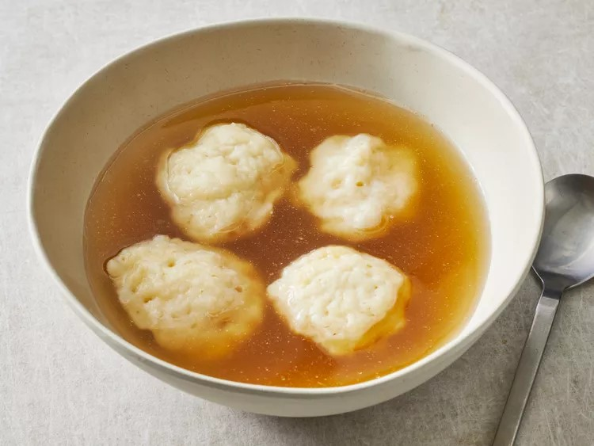

Homemade Dumplings

Description
From allrecipes.
Have a hankering for light, fluffy, tender dumplings just like your mom used to make? You've come to the right place.
These homemade dumplings are easy to make with just six pantry staples – and they're even easier to eat.
With this top-rated recipe, you'll make perfect dumplings every time.
Ingredients
- 1 cup all-purpose flour
- 2 teaspoons baking powder
- 1 teaspoon white sugar
- ½ teaspoon salt
- 1 tablespoon butter or margarine
- ½ cup milk
Steps
-
Stir together flour, baking powder, sugar, and salt in a bowl.
-
Cut in butter until mixture is crumbly. Stir in milk and mix until a batter forms that is thick enough to be scooped with a spoon.
Allow batter to rest for 3 to 5 minutes.
-
Drop batter by spoonfuls into boiling stew or soup. Cover and simmer without lifting the lid for 15 minutes. Serve.
-
Serve hot and enjoy!